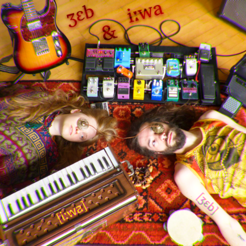

Music is an another important part of my life.
I did my BA with Artistic Education in Musical Art,
I’ve learnt how to play the harmonium in a classical way
from a great music teacher in India.
What to say more, music is in my soul,
in my heart and in my mind all the time.
I’m fully engaged with a project Ʒɛb ənd Iːwa, with my pal Jeb.
We live on a small island where two tectonic plates meet,
and it inspired us to connect Eastern, traditional music with Western vibes.
Jeb’s mellow guitar playing happened to match perfectly with what I learnt in India
when we tried to play together, so was born the band! .
